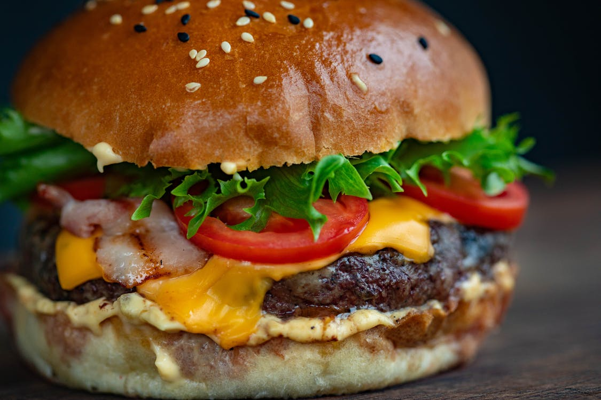

Cheesy Steakburger

Ingredients
- 1 pound ground beef
- ¼ cup A.1. Original Steak Sauce, divided
- 4 each KRAFT DELI STYLE American Cheese Slices
- 4 each Kaiser rolls, split, toasted
- 4 leaves leaf lettuce
- 8 thin slices tomato
Steps
- Mix meat with 2 tablespoons of the steak sauce; shape into 4 patties.
- Grill or broil burgers 7 to 9 minutes on each side or until cooked through, brushing occasionally with remaining steak sauce. Top with process cheese; continue cooking until process cheese begins to melt.
- Fill rolls with lettuce, tomatoes and cheeseburgers.
Great Substitute
Try leaner cuts of ground beef, such as ground round or ground sirloin, in place of the ground beef.
Substitute hamburger buns for the kaiser rolls.
Nutrition Facts
Per Serving: 437 calories; protein 28.2g; carbohydrates 24.9g; fat 24.4g; cholesterol 101mg; sodium 979.3mg. Full Nutrition